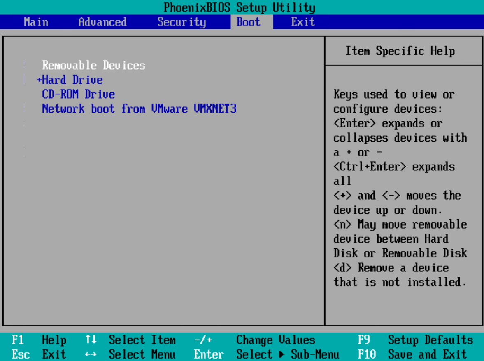
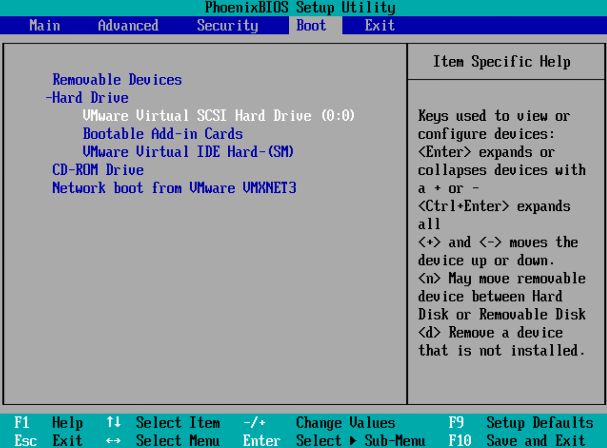

恢复VMware虚拟机时，管理界面任务详情中提示“恢复nvram文件失败”，则恢复后的虚拟机可能无法正常进入操作系统，可参考以下步骤进行处理，本节以vSphere Client 6.7.0版本为例说明。

- 备份VMware虚拟机时，如果管理界面任务详情中提示“备份nvram文件失败”，则使用该副本恢复虚拟机时将出现该问题。建议您不使用该副本进行恢复或恢复后参考本节进行处理。
- 本节内容同样适用于即时恢复、即时挂载。
- 设置下次进入虚拟机引导界面时进入BIOS设置。
- 使用浏览器，登录vCenter Server。
登录地址：https://vcenter_server_ip_address
- 根据虚拟机名称查找到恢复后的虚拟机。
- 选择“操作 > 编辑设置”。
- 在“虚拟机选项 > 引导选项 > 强制执行BIOS设置”下，勾选“下次引导期间强制进入BIOS设置屏幕”。
- 单击“确定”。
- 重启虚拟机。
- 使用浏览器，登录vCenter Server。
- 在BIOS中设置启动虚拟机时能优先扫描到系统盘。
执行此操作前，请自行记录修改前的启动顺序，便于需要时回退。
- 在虚拟机页面，单击“启动Web控制台”，虚拟机进入BIOS设置。
- 通过←→键将光标移至BooT。

- 通过↑↓键将光标移至Hard Drive，按Enter展开。
- 通过↑↓键将光标移至系统盘，按Shift++将该硬盘移至第一个。
如下所示“VMware Virtual SCSI Hard Driver (0:0)”为操作系统所在硬盘，请根据实际环境进行选择。

- 按F10保存并返回。
将正常进入虚拟机操作系统。